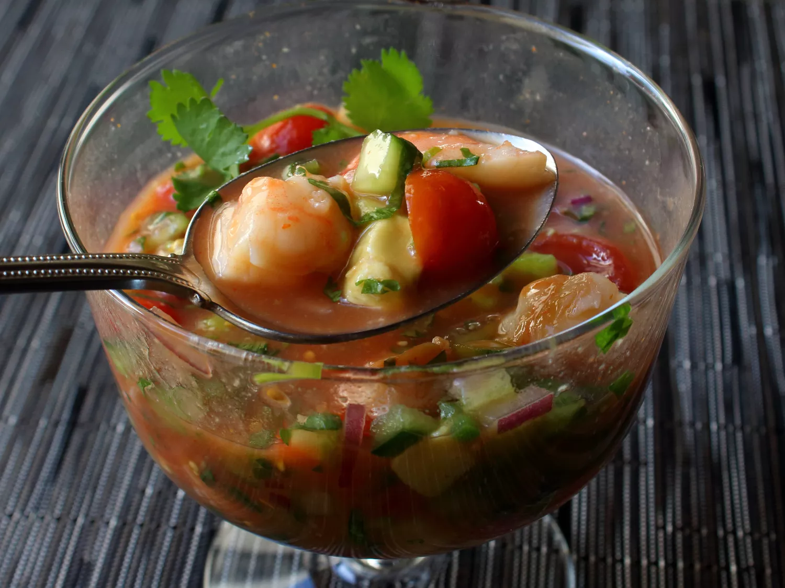

Mexican-Style Shrimp Cocktail

Mexican-style shrimp cocktails are commonly spotted on menus in the
Bay Area of California, but they don't seem to have caught on elsewhere —
which is surprising since you can pretty much get Mexican food like tacos
and burritos in just about any corner of the country. This is my version;
you can make it your own by using these ingredients and amounts as a
rough guide.
Ingredients
- 1 cup clam juice
- ¼ teaspoon dried oregano
- 1 pound large shrimp, peeled and deveined
- 1 ¼ cups peeled, seeded, diced ripe tomatoes
- 1 cup diced English cucumber
- ½ cup diced celery
- ½ cup finely diced red onion
- 2 tablespoons seeded and diced jalapeno peppers
- ½ cup ketchup
- 2 medium limes, juiced
- 2 tablespoons freshly chopped cilantro, plus more for garnish
- 1 dash Mexican-style hot sauce
- 1 large Hass avocado, cubed
Steps
-
Bring clam juice and oregano to a boil in a saucepan over
medium-high heat. Add shrimp; cook and stir just until shrimp
turn pink, about 2 minutes. (They will not be cooked through.)
Transfer shrimp to a bowl with a slotted spoon; let cool to
room temperature. Reserve liquid.
-
While the shrimp are cooling, combine tomatoes, cucumbers, celery,
onion, and jalapeños in a mixing bowl. Gently mix in reserved cooking
liquid, ketchup, lime juice, 2 tablespoons cilantro, and hot sauce until
well combined.
-
Place four whole shrimp in a small bowl; cover with plastic wrap.
Chop remaining shrimp into bite-sized pieces; add to vegetable mixture
and stir to combine. Cover with plastic wrap. Refrigerate both bowls
until thoroughly chilled, 2 to 3 hours.
-
When ready to serve, stir avocado into the shrimp cocktail. Divide into
four glass bowls; top each with a chilled whole shrimp and garnish with
cilantro.
Home